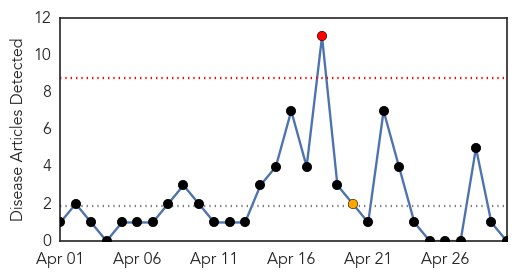
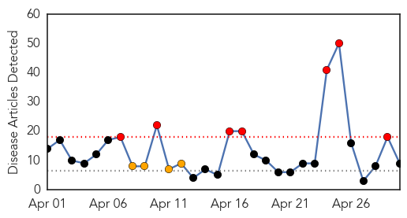

Mumps
30-Day Web Trend
1 alerts, 1 warnings

30-Day Twitter Trend
0 alerts, 0 warnings

Article Locations

Article Confidences

Top Articles:
-
No articles found for Apr 30, 2014
Top Tweets:
-
No tweets found for Apr 30, 2014
Measles
30-Day Web Trend
7 alerts, 4 warnings

30-Day Twitter Trend
0 alerts, 0 warnings

Article Locations

Article Confidences
Top Articles:
- 0.982
- Measles outbreak declared in Calgary, Edmonton and central Alberta
- 0.971
- Measles case confirmed in Wayne County, Ohio - The Daily Record
- 0.939
- State health department confirms third measles case
- 0.873
- Three more probable cases of measles in PNHR
- 0.793
- Edmontonians express frustration following measles outbreak - Edmonton
- 0.772
- Metro Calgary Quotes Anti-Vaccine Homeopath Day After Measles Outbreak Declared
- 0.715
- DOH marks infant immunization weekHealth News
- 0.712
- Measles case reported in Branford
- 0.621
- Vietnam health minister refuses to resign under mounting pressure
Top Tweets:
-
No tweets found for Apr 30, 2014